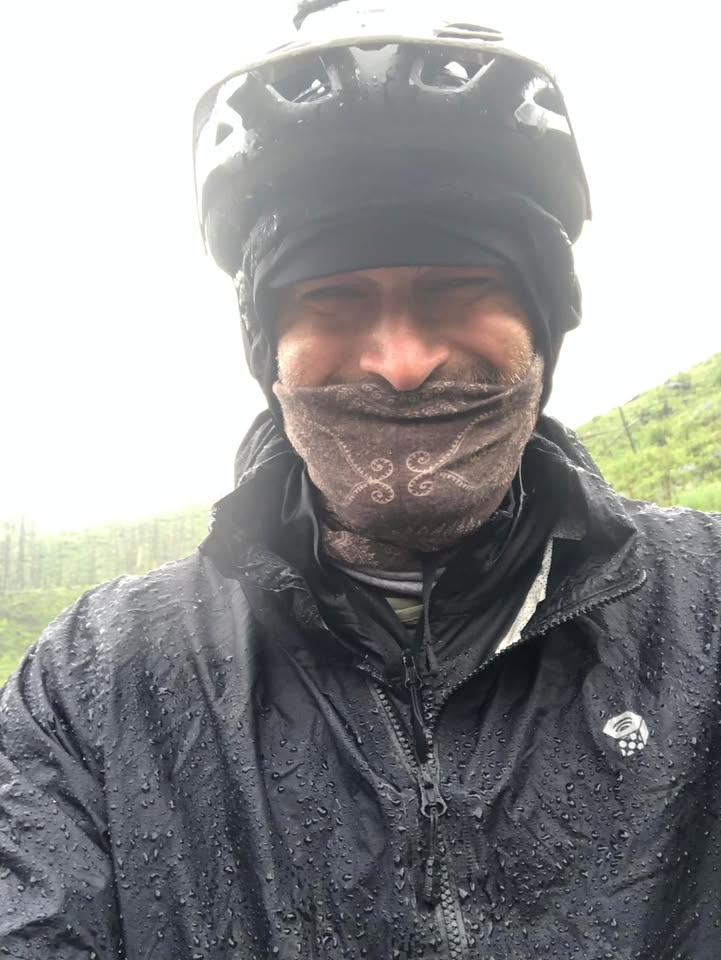
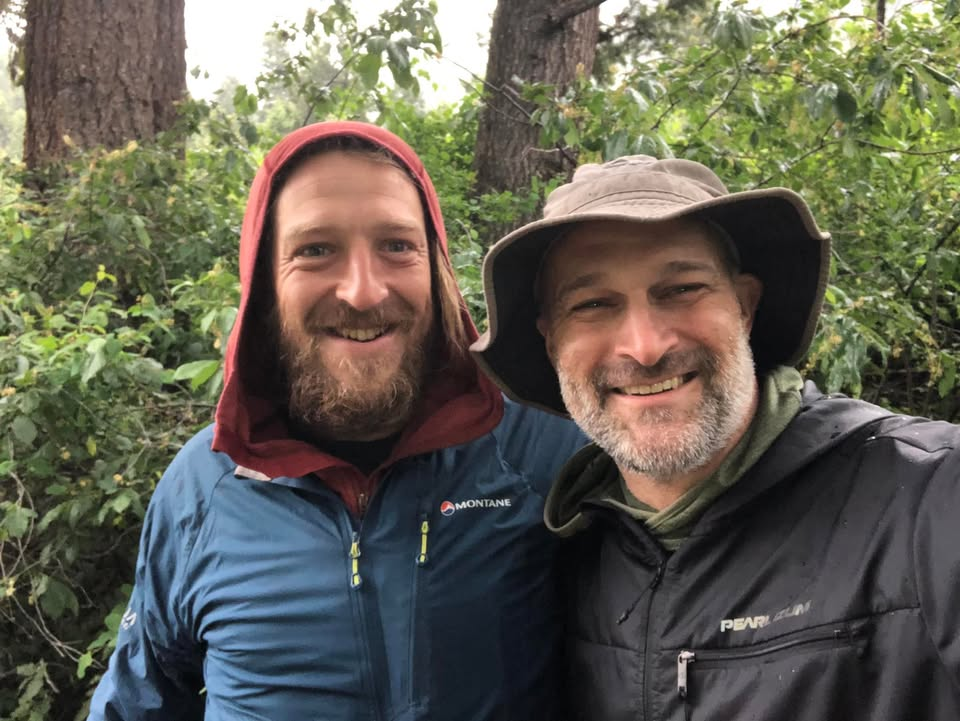
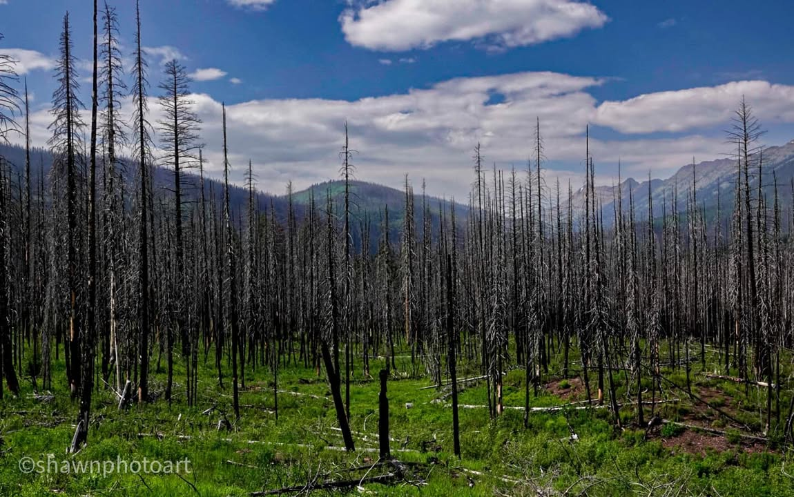
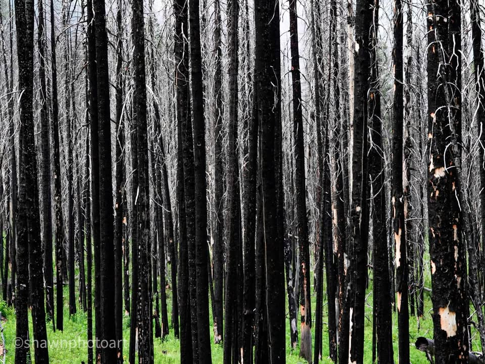
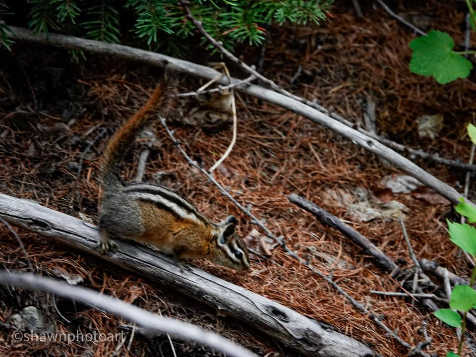

Day 8.. sleeping in, short day to no hotel, quick post

From the Journey
Sleeping. In made for a nice relaxing morning. Cooking a hot meal with coffee, while I watched the sun pearce through the trees made a good start to the day. However, in the overall plan I should have gotten an earlier start so I could make it in to the next “good” town.

From the Journey
Only about a mile of the trail I ran into another biker, Adam. I thought I was on the adventure of a lifetime, but Adam has me beat. 10 months ago, he sold everything he had bought a bike and the gear that he has and then flew to Alaska. He a Carpenter from England and talks with a thick British accent. He’s been living off of his bike for 10 months. He started in Alaska and is now down to Montana. He has had so many misadventures from running into Moose and seeing tons of bears. Because he’s totally living off of his bike he is a lot heavier and isn’t going as fast as I am. I spent a little time along the trail with Adam and then we ended up camping together later that night. I gave him a couple lessons in photography that he appreciated.

From the Journey
The climb that I had in front of me was probably the hardest climb I’ve done as of yet. At the very top it turned into some single track (A trail more fitted for a hiker than a biker) this single track trail wasn’t too bad but one mistake and you would end up 100 feet down the hill, with more than just a bruised pride. Falling off a trail like this would definitely end my ride and possibly more. That’s all part of the payment or risk for the experience and the views.

From the Journey
Eventually, the single track turned into a road again and then back into some rough single track with burnt trees all around. It made for some interesting pictures.

From the Journey
Getting to the bottom of this hill, there was a town mile off the trail. I was pretty exhausted and decided to give it a chance. Upon rolling into this town, I found a hotel that was deemed, private property, and no trespassing. Kind of a curious site. I rode through town and was told there was another hotel at the other end of town that I could stay at. However, upon getting there, I found the same, private property, no trespassing. I ended up talking to some of the Occupants who were from various nations. South Africa, Jamaica, and another country I don’t remember. These ladies explained to me that they were migrant workers here to work at the resort. Through some questioning Of locals, I figured out that both of the hotels were owned by the same Owners who sold out to a conglomerate, which turned them into housing for migrant workers. So effectively there is no place in this town for normal people to stay and all the middle class was getting pushed out. That was a sad realization.
I decided to move down the trail, another 8 miles to the campground. It was not the best of campgrounds, but it would do for the night. I had talked to Adam and another biker John and told him where I would be. If it wasn’t for that knowing they were going to meet me, I probably would’ve pushed on a little bit further.
All in all, this was a pretty hard day with a bad decision to take a detour into town. That cost me an extra 5 miles of travel And in amazing campsite for the night with the only gain being a good meal at a restaurant. late after I was asleep, I heard my new bike, friends, Adam and John pull into my campsite and set up. I was exhausted I need to get some sleep. But the morning will bring new surprises.